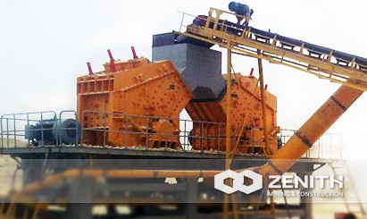
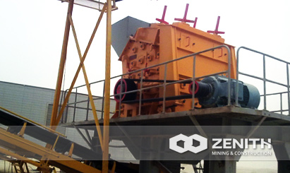
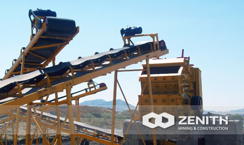
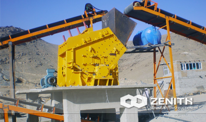

- 
- 
- 
- 
PF Impact Crusher
Impact crusher can deal with each kind of coarse, medium, fine cubic material (granite, limestone and concrete, etc) with feeding size not more than 500mm and crushing strength not more than 350MPa.
It absorbing advanced technology both at home and aboard, PF impact crusher can easily meet those requirements of mining condition in domestic mining industry. In addition, the discharging size of our PF series impact crusher is adjustable and the crushing specification is diversified.
Widely Application of PE Jaw Crusher
Impact crusher are mostly used as secondary crusher and it well fits for crushing numerous medium and soft mineral &rock materials, such as limestone, feldspar, calcite, talc, barite, clay, tombar thite, kaolin, gypsum, and graphite, etc.
PF impact crusher Benefits and advantages
- Chrome hammer and special impact plate;
- Cubical shape of final product and the output size is adjustable;
- Big feeding hole, high crushing chamber, applicable for crushing bulk materials of high hardness and less powder products.
- Gap between impact plate and flat hammer can be conveniently adjusted to effectively control outputting size. Finished product is cubic and in good shape.
- Compact structure, strong rigidity of machine, rotor has big inertia moment.
- Adoption of new rotor increases impact force.
- Complete crushing function, high reduction ratio, high productivity, low energy consumption and high comprehensive benefit.
- Non-key connection, simple structure, convenient maintenance, economical, reliable.
The tacnology data
| Model | Rotor Φ×L (mm) | Feed Opening (mm) | Max Feeding (mm) | Capacity (t/h) | Power (kw) | Motor Model | Machine Size (mm) |
|---|---|---|---|---|---|---|---|
| PF1010 | Φ1000×1050 | 400×1080 | 350 | 50-80 | 4-75 | Y280S-4/75 | 2455×2086×2800 |
| PF1210 | Φ1250×1050 | 400×1080 | 350 | 60-120 | 6-110 | Y315L1-6/110 | 2590×2050×2810 |
| PF1214 | Φ1250×1400 | 400×1430 | 350 | 80-160 | 6-132 | Y315L2-6/132 | 2590×2400×2810 |
| PF1315 | Φ1300×1500 | 860×1520 | 350 | 120-260 | 6-200 | Y355M3-6/200 | 2930×2760×3050 |